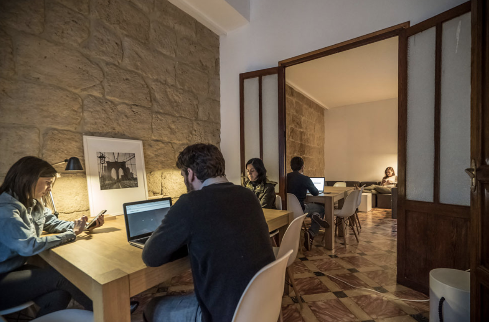
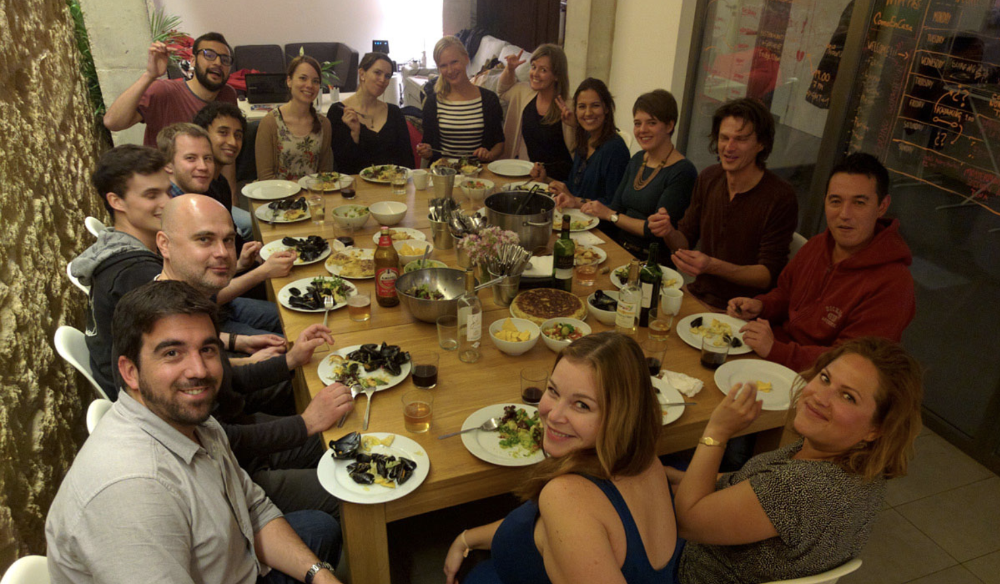

My Next Adventures: Iceland, Morocco, Spain, Scotland and Germany
I used to proactively write about every upcoming travel adventure I had, but I tend not to do that much these days. One of the reasons is that sometimes my plans change, and then I end up with a post that's no longer accurate. Another reason is that people, while well intentioned, tend to sometimes aggressively give advice on how I should change my trips around, which ends up putting me on the defensive regarding my choices (most of which are well thought out in terms of what I want to get out of that trip).
That said, this next three month trip of mine is pretty exciting, so I wanted to share it.
Iceland
In less than a week I'm getting on a plane and heading to Iceland for two days. Obviously two days is a pretty short amount of time, but I'm taking advantage of Iceland Air's free stopover policy to at least get a taste for what Iceland has to offer. I arrive there around 6am local time, and plan to spend my first day walking and taking photos around Reykjavik. For my second day there I am taking a long full-day Golden Circle Tour, which should provide a lot of great photo opportunities and give me a brief overview of some of the amazing landscapes Iceland has to offer. After the tour I'll likely grab a nice dinner somewhere, and then get ready for my early morning flight to Amsterdam, and then Morocco.
Obviously I'd like to stay longer in Iceland, but it's likely going to be the most expensive place I've ever visited (which is currently Singapore). I've been told to expect to pay $50 for even regular meals, so it's one of those places that can easily break the bank. While I'm sure it's beautiful, at this point in time I'd rather stay a full month in Spain rather than a few more days in Iceland, which I could probably do for the same cost. That said, I am really looking forward to visiting Iceland. My only real regret is I don't have time to visit Bobby Fischer's grave, which is something I'd like to do if I had more time.
Morocco
I actually have a bunch of work-related projects on the go, and really need to make some forward (and hopefully final) progress on some of them. So I decided to spend a few months bouncing between a few co-working spaces so I can get some real work done during the days. The newest trend in co-working spaces is actually something called a co-living space, and it's a place where you can work and also live (via dorms or private apartments) for a period of time.
 View from the coworking facility in Taghazout, Morocco. Photo from instagram.
View from the coworking facility in Taghazout, Morocco. Photo from instagram.
My first stop will be the SunDesk co-working/co-living space in Taghazout, Morocco. Taghazout is a cute little fishing/surfing village on the west-coast of Morocco, and boasts great weather with beautiful ocean-side views. I've rented a small bedroom with a view of the ocean for the month, and will be spending that time working on some projects, doing some early morning yoga (a first for me!), getting back into running, and hopefully exploring more of Morocco on the weekends.
I'll be in Morocco for all of April, after which I'll head north to Spain.
Spain
Spain is one of my favourite countries, and I always enjoy whatever time I can spend there. Last year I completed an 800km pilgrimage across Spain, and ended up near Málaga on the coast afterwards. So for this trip I'm going about five hours further up the east coast of Spain and staying in a co-working/co-living space in Javéa, Spain for a month.

Sun and Co Co-working Spain in Javéa
One of the aspects I really dislike with working from home is the real lack of social interaction on a daily basis. These co-working and co-living spaces are really set up to encourage making new friends and also to socialize in the evenings and weekends. In the Spain co-living space they often share meals together, or head down to the beach for an evening hike. So I'm really looking forward to getting some work done and also getting to know some more like-minded entrepreneurs.

Communal Dinners
At the end of May I'll grab a plane, and then head to my next destination.
Scotland
I arrive in Scotland on June 1st, and will hopefully meet up with my friend Tony, who should be flying in from somewhere in Asia. Together we are going to walk the 155km West Highland Way which starts near Glasgow and ends up near Fort William in Scotland.
After the walk I'm hoping to head to Edinburgh for a few days, where some of my friends I met along the Camino de Santiago may meet up with me. Regardless Edinburgh is a great city, and I'm really looking forward to being back there for a few days at least.
Germany
The last stop of my trip will likely be Germany. I have a few friends I haven't seen in a long time, and conveniently they are all going to be in Germany in the middle of June. While I've flown through Germany a few times, I've never really had a chance to do any exploring. Berlin is certainly a city I've wanted to visit for a long time, so I'm going to do my best to make that happen on this trip.
Once Germany is done, I'll make my way back to London for my flight home to Vancouver, at which point I'll meet up with some of my Australian friends (that I also met on the Camino de Santiago) for a 10 day Canadian tour of our BC wine region and rocky mountains.
The Countdown Is On
So right now I have only about a week to go, and at least that much work I need to finish at home to get my cottage ready for this year's rental season. But I'm really looking forward to this next three month adventure, and if I've planned this right, should hopefully enjoy mostly sunshine and 25C days as I slowly make my way north from Africa over the next three months.